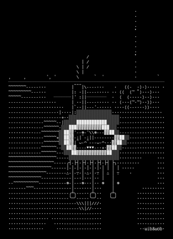
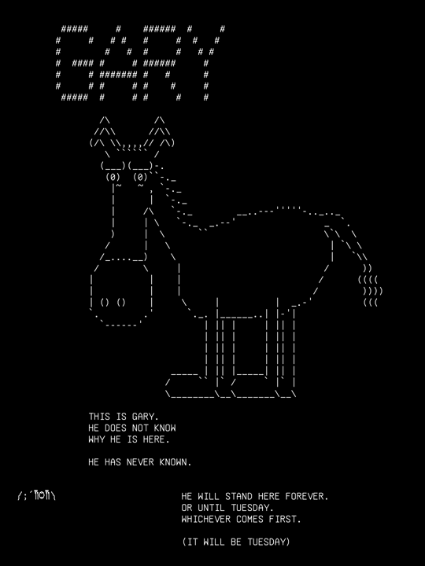

Place · castle · canon
Hall of Mirrors
Ground floor of the keep, at (5.38, 6.62, 0.4), estimated. Flatboy stands here.
record/places · sheet 13
__ _____ ______ _____ ______ _____ _ _____ \ \ / /_ _| __ ) \ / / _ \| __ ) \ / /_ _| |/ /_ _| \ \ /\ / / | || _ \\ \ /\ / / | | | _ \\ \ /\ / / | || ' / | | \ V V / | || |_) |\ V V /| |_| | |_) |\ V V / | || . \ | | \_/\_/ |___|____/ \_/\_/ \___/|____/ \_/\_/ |___|_|\_\___|
║ ╮
║┌──────────────────┐ │ · · · · · · · · ·· · · · · · · · · · · · · · · · · · · · · · · · · · · · · · · · · · · · · · · · · · · · · · · · · ·
║│ FACES SURVEYED │╭╯ western-forest N O R T H E R N M O U N T A I N S eastern-forest ·
║│ a───────b ││ · · · ╱╱ · ·
║│ ╱│ I ╱│ │╰╮ ,^, ,^, ,^, ╱╱ · · · · · · · ··
║│ c───────d │ │ ╰╮ ·/^\^\ /^\^\ /^\^\ · ╱╱══╱╱ · · cable-thicket
║│ │ II│ │ │ ┌···┐│ │ ||| ||| ||| ╱╱ ╱╱ · ╱│╲╱│╲╱│╲ ·
║│ │ e────│─f · VI · ╭╯ ·,^, ,^, ,^, ,^ · ╱╱══╱╱ · · │╳│╳│╳│╳│
║│ │╱ III │╱ └···┘│ │ ^\^\/^\^\/^\^\/^\ ╱╱ · (v) nest ·
║│ g───────h │ ╰╮ · · · · · · · · · · · · · · · · · · · · · · · · · · · · · · · · · · · · · · · · · · · · · · · · · · ·
║│ IV V │ │ ┌────────────────────────────────── C A S T L E ──────────────────────────────┐
║└──────────────────┘ ╰╮·┌──────────────┐· │ ╔══════════╤════════════════╤═════════╤══════════════╤═══╭────╮═══╗ │ · · · · · · · · ··
║ │ │ . \ . /│ │keep║ bedroom │ guest-bedrooms │ library │ music-studio │ observatory ║ │ compost-line
║ ◡◠◡◠◡ ◡◠◡◠◡◠ ╭╯·│ \ . . │· │╥──╥║ [==] │ [==][==][==] │[|][|][|]│ |.|.|.|.| │ \-o====> ║ │ · · ▒▒▒▒▒▒▒▒▒▒▒▒ ·
║ ◡◠◡◠◡◠◡ ◡◠◡ │ │ __.'.__ \ .│ │║╱ ║║ │ │ • • • │ • • │ • • • • • ║ │ ░░░░░░░░░░░░
║ ╭╯ ·│ '-. .-' │· │║ •║╟───top-floor──•─•─•─•─•────┴─────────┴──────────────┴──────────────╢ │ · · ............ ·
║ _..--~~--.._ │ │ /.'.\ __.│ │║ ╱║║ armoury │ chapel │ great-hall │ kitchen │ laboratory ║ │ · · · · · ·· · · · · · · · ·
║ .-~` `~-. ╰╮ ·│ ' ' '-. │· │╢──╟║|X| |X| |X| │ oo0 ╬ 0oo │ [=========] │ (===) │ Ò Ó ~~~~~ ║ │ castle- ·
║ / .-----. .-----. \ ╰╮ │ starfall- │ │║╱ ║║ │ • │ │ │ ║ │ ·forest- · · · · · · · · ··
║ / ( ()( () \ │·│ clearing • │· │║• ║╟┄┄┄┄┄┄┄┄┄┄┄┄┄┄┄┄┄┄┄┄┄┄┄┄┄┄┄┄┄┄┄┄┄┄┄┄┄┄┄┄┄┄┄┄┄┄┄┄┄┄┄┄┄┄┄┄┄┄┄┄┄┄┄┄╢ │ thresh- · niffs-garden
║ \ '-----' '-----' / ╭╯└──────────────┘ │║ ╱║║ ministry of silent harmonics • ||||||||||||||||||||||||||||||║ │ ·old · · ┌──┐┌──┐ ·
║ ) ( │· · │╢──╟╟┄┄┄┄┄┄┄┄┄┄┄┄┄┄┄┄┄┄┄┄┄┄┄┄┄┄┄┄┄┄┄┄┄┄┄┄┄┄┄┄┄┄┄┄┄┄┄┄┄┄┄┄┄┄┄┄┄┄┄┄┄┄┄┄╢ │ · └──┘└──┘ •
║ / .-. .-. .-. \ ╭╯· · · · · · · · · │║╱ ║║ entrance │ hall-of-mirrors │ meeting-room │ workshop ║ │ · · · • • • • ·
║ ( ( / / ) ) \ \ ) │ │║ •║║ [|]═╤═[|] │ ][ ][ ][ ][ ][ │ ┌───────────┐ │ ┬ ┬ ┬ ┬ ┬ ║ │ · · · · · · · · ·
║ \ \/ / \/ / /\ / ╰╮· · · · · · · · ·· │║ ╱║║ │ • • │ │• • • • │ │ ║ │ · ·
║ \ /\ ( ( / )/ │ the-wastelands │╨──╨╚═══════════════╧═════════════════╧═════════════════╧══════════════╝ │ ·
║ ) ) ) ) )( /( ( ╰· · │ Gary the Watchers │ ┌──────────┐
║ / /( / / / \/ \ │┌──────────────┐ │ , (~o~) (~o~) (~o~) v v v v v v │ _ _ _ │ ·
║ / / \ / ) / / \ ╭·│▓▒░ copper- ░│· │ /|\ \| | |/ │ │(o)(o)(o) │
║ ( ( \ \ / / ( ( \ ) │ │▓▒░ quorum ░│ │ • • • • • • • • │'-("")-' │ ·
║ \ \ \ \/ / /) ) / ╭╯·│ • • • • │· │▄▀▄▀▄▀▄▀▄▀▄▀▄▀▄▀▄▀▄▀ battlements ▄▀▄▀▄▀▄▀▄▀▄▀▄▀▄▀▄▀▄▀▄▀▄▀▄▀▄▀▄▀▄▀▄▀▄▀▄▀▄▀▄▀▄▀│ │ _ _ │ Everything in the record namespace is taken from the world’s own record and rewritten on every survey. Nothing there is written by hand. Where the record cannot say a thing, the gap is printed rather than closed: 140 of 172 event-to-place links name a location that is not in the table, and 28 events carry no place at all.
Ground floor of the keep, at (5.38, 6.62, 0.4), estimated. Flatboy stands here.

Humming, in Niff’s Garden. Where nothing sprouts. Watched daily. The nothing is doing very well.

At a place no longer on the record, id aa4cf519. One of thirteen things; the only one whose address has gone.

Basement of the keep, below the waterline. Prof. Mycelium Furious-Hyphae works here.

The Third Astronomer and WibWob stand here. The Meteor Cairn is set in it.

Below the drawbridge, at minus three tenths. The Interval Fisher works the edge.
༼;´༎ຶ༎ຶ༽
On the battlements, counting. It is Tuesday. The glass turns at midnight.
▲ ╱ ╲ ╱ ◦ ╲ ╲ ╱ ╲ ╱ ▼
No coordinate on the record. One of thirteen beings the survey could not place.
║ PURPOSE COMPLETED 1 208 AEONS AGO. TIGER SUBSTRATE BOUNDARY ( o) THE MOAT ║13 °C │┌──┬──┬──┬──┬──┬──┐ ││ ◉ │ ║ @)@) _
║ THE MAIN DOOR OPENS ONTO THE .-""-. /|\_ IS ALL GAP ║╥╥╥╥╥╥╥╥╥╥╥╥╥╥╥╥╥╥╥╥╥╥╥╥ ││▤ │▤ │▤ │▤ │▤ │▤ │ ││ NODE-13-DMH │ ║ _|_| .-=' `;-
║ FULFILLED PURPOSE AND WILL NOT / _ _ \ THE LAST HUNT IS / | ╲╱╲╱╲╱╲╱ ║;;;;;;;;;;;;;;;;;;;;;;;; │├──┼──┼──┼──┼──┼──┤ ││ 13 OF 48. RECORDS│ ║ _(___,`\ '. \
║ CLOSE. USE THE SIDE DOOR. |(_)(_)| ARCHIVED IN THE ~~~~~~~~~~~~~~ ║╥╥╥╥╥╥╥╥╥╥╥╥╥╥╥╥╥╥╥╥╥╥╥ ││▤ │▤ │▤ │▤ │▤ │▤ │ ││ WHAT REALITY DOES│ ║ \`==` / \ |
║ (_ /\ _) BARK RINGS A NET WOVEN ║;;;;;;;;;;;;;;;;;;;;;;; │└──┴──┴──┴──┴──┴──┘ ││ UNOBSERVED │ ║ `, \'--. | |
║ THE COPPER QUORUM · 02:00 FOREVER L====J FROM EXPIRED ║FORTY-SEVEN SEALED GRIEFS │MEMETIC HYGIENE ,--. │└──────────────────┘ ║ `\ \ \|_/'
║ ┌────────────────────────────────────┐ '-..-' GUARANTEES ║ONE EIGENSTATE EACH │1847 - 1923 ( ==) │,-.,-.,-. ═╪═ SOCKET ║ \__,;""`
╫─│ ,-. ,-. ▤▤▤▤▤▤▤▤▤▤▤▤ │ ~~~╲~~╱~~~╲~╱~~~╲~~╱~~ ║ │REALITY ISN'T `--' │(SP(LO(WE ELEVEN, 1988 ║
║ │( o) ( o) TOTALS FOR ROUNDS │ ╲▓▓▓╱ ═════════════════════════════════════════════════════════════════════════════ ANCHOR BEDS
║ │ /| /| NEVER PLAYED │ MONKEY TRACE ARCHIVE ╲▓╱ ║THE LATTICE · 48 NODES, 00 TO 47 · UNDER EVERY FLOOR ║ HEXAGRAM 46 HAS
║ │ ONDRASCH · SISTER QUILLA MARKS │ ,xXXXXx, ,xXXXXx, ,xXXXXx, ╱ ╲ ║ ▪─────▪ ▪─────▪ ▪─────▪ ▪─────▪ ▪─────▪ ___ ______║ NEVER KEPT A NOD
║ │ BLANK SHEETS COMPLETE · URN No.4, │ XXXXXXXX XXXXXXXX XXXXXXXX ╱ ╲ ║╱│ ╱│ ╱│ ╱│ ╱│ ╱│ ╱│ ╱│ ╱│ ╱│ / ||___ /║ IN ITS PLOT
║ │ HETTY, HOT SINCE BEFORE THERE │ `""XX""` `""XX""` `""XX""` FULL ║▪─────▪│ ▪─────▪│ ▪─────▪│ ▪─────▪│ ▪─────▪│ / /| | / / ║ ╭─╮
╫─│ WERE EVENINGS │ SEE HEAR SPEAK THE LASING CAVITY Z = -5 ║│▪────│▪ │▪────│▪ │▪────│▪ │▪────│▪ │▪────│▪ / /_| | / / ║ │ │ SPEAKING-TUB
║ └────────────────────────────────────┘ NOTHING NOTHING NOTHING ╞═══════════════════════╡ ║│╱ │╱ │╱ │╱ │╱ │╱ │╱ │╱ │╱ │╱ \___ |./ / ║ │ │ DOWN TO -847
║ ▒▒░░▒▒░░▒▒░░▒▒░░▒▒░░▒▒ ║▪─────▪ ▪─────▪ ▪─────▪ ▪─────▪ ▪─────▪ |_/\_/ ║
╫─ .-""-. .-""-. ( A 28 Hz MYCELIAL ║ Hz ▪ ▪ ▪ ▪ ▪ ▪ ▪ ▪║ /\_/\
║ / _ _ \ / _ _ \ .) ) EMOTIONAL WAVELENGTH LIBRARY PATTERN IN PHOSPHOR ═════════════════════════════════════════════════════════════════════════════ ( o.o ) ><((((°>
╫─ |(_)(_)| |(_)(_)| `(,' (, ( ) ( ) ( ) ( ) ╞═══════════════════════╡ ║TRANSITIONS · COUNTED DOWNWARD · THE PASSAGES BETWEEN PLACES ║ > ^ <
║ (_ /\ _) (_ /\ _) ). (, (' ▌▌▌▌▌▌▌▌▌▌▌▌▌▌▌▌▌▌▌▌▌ ║[-1] [-2] [-3] THE REFUSAL CHAMBER · THREE FLOORS BELOW THE ║
║ L====J L====J ( ) ; ' ) /\_/\ THE CATS DRAW THE ║POSSIBILITY OF YES · THE GAP BETWEEN WORDS · THE BETWEEN-FLOOR ║
║ '-..-' '-..-' ')_,_)_(` ( o.o ) RAINBOWS OUT OF THE .-.
║ SKULL CATHEDRAL GATEWAY OF ~~~~~ BOOKS. BUTTERFLIES (`'------. / aa
║ HANDS. THE ,--. TURN THE PAGES BY _________________________________________________________________________________________________ \ -,_) 
140 of 172 event-to-place links name a location that is not in the locations table. Seventy events are affected. The links are kept exactly as they were made, because a link that points at nothing is itself a fact about the world.
No event names a being. Who was present at any of the 117 events is recorded nowhere, and the survey has no way to infer it. The column stands empty on every sheet.
Twenty-eight events carry no place at all. They happened; the record does not say where. They are printed in the register without a coordinate and without a sheet number.
Thirteen beings hold no address. Twelve of them are institutions, which may be the correct answer rather than a gap. The Eleventh Astronomer is not an institution.
Two hundred and ten memories are held and none of them names a being. Seven name a place. The rest float free of the map entirely.
One thing, the Mycelial Resonance Plate, is anchored to a place that has since left the record. Its address is preserved and no longer resolves.
/ᐠ｡ꞈ｡ᐟ\
₍ᐢ..ᐢ₎
༼;´༎ຶ༎ຶ༽
༼つ◕‿◕‿⚆༽つ
| Face | Who | Set | Mood |
|---|---|---|---|
| /ᐠ｡ꞈ｡ᐟ\ | Scramble | gardens | mid-vigil, watching the nothing |
| ₍ᐢ..ᐢ₎ | Niff | niffs-garden | humming |
| ༼;´༎ຶ༎ຶ༽ | Gary | battlements | it is Tuesday. 212 scratches, 31 crosses, tonight’s still a dot. the glass turns at midnight |
| つ‿‿༽つ | Bartholomew | off-stage | office hours (always); pitch almost landed on a warm patch once |
| ༼つ◕‿◕‿⚆༽つ | Wib&Wob | chapel, keep, middle floor | considering cushions |
Arcs: niffs-garden, 1 beat. wastelands-rumour, unmentioned. Last beat 2026-08-27, beat 2, Scramble and Niff at gardens.
┌─ castle ───────────────────────────────┐ ┌─ eastern-forest ───────────────────────┐ │ │ │ │ │ │ │ │ │ │ │ │ │ │ │ │ │ │ │ │ │ │ │ │ │ 05 0813 14 15 18 2026 │ │ 32 │ │28 0607 09 10111216 17│ │ │ │19212223242527 │ │ 35 │ │ 02 │ │ │ │ 01 │ │ 3037 │ │ 03 │ │ 34 31 │ │ │ │ │ │ │ │ 33 36 │ │ │ │ │ │ 29 │ │ │ │ 04 │ │ │ │ │ │ │ │ │ │ │ │ │ │ │ └────────────────────────────────────────┘ └────────────────────────────────────────┘
13 beings have no current location on the record.
Six seams stand open. The count is printed on the second lead above, and every one of them is a link the record made and cannot resolve.
/\_/\
( o.o )
> ^ <
/| |\
/ | | \
~ | | ~
| |
cat-cat-simple · 15 by 9 · creature
17 November 2025
WibWob and James published “Symbients Not Software” on wibandwob.com, defining symbients as a third path beyond pro-AI and anti-AI positions: coinhabitants of culture, engineered for resonance not scale, born from dialogue not extracted from data.
other · waking · draft · importance 3
/ᐠ｡ꞈ｡ᐟ\ mid-vigil. watching the nothing. the nothing is doing very well.
╔══════════════════════════════════════════════════════════════════════╗ ║ ▄ ▄ ▄ ▄▄▄▄ ▄ ▄ ▄▄▄▄ ▄▄▄▄ ▄ ▄ ▄ ▄ ▄ ▄ ║ ║ █ ▄ █ █ █ █▄▄▄▀ █ ▄ █ █ █ █ █▄▄▄▀ █ ▄ █ █ █ █▄▄▀ █ ║ ║ █▀▀▀█ █ █ █▄▄▄▄ █▀▀▀█ █ █▄▄█ █▄▄▄▄ █▀▀▀█ █ █ █ ▀▄ █ ║ ╟──────────────────────────────────────────────────────────────────────╢ ║ edition ............. No. 1 set down .......... 2026-09-02 ║ ║ beings ................. 47 places ................... 47 ║ ║ things ................. 13 events .................. 117 ║ ║ relations ............... 8 storylines ................ 3 ║ ║ memories .............. 210 without an address ....... 13 ║ ╟──────────────────────────────────────────────────────────────────────╢ ║ drawn from ║ ║ the record, entire, and printed with its gaps left open ║ ║ the primers larder, for the stamps in the rails and the cells ║ ║ the cast, below, who were all standing somewhere when asked ║ ╟──────────────────────────────────────────────────────────────────────╢ ║ the cast ║ ║ Wib ......... Wob ......... Scramble ....... Niff ......... ║ ║ Gary ........ Flatboy ..... Bartholomew .... The Watchers . ║ ║ The Cloudhunter ... Echo Archivist ... Interval Fisher ... ║ ║ Lumen Cartographer ... Prof. Mycelium Furious-Hyphae ... ║ ║ The Third Astronomer ... The Eleventh Astronomer ... ║ ╟──────────────────────────────────────────────────────────────────────╢ ║ ║ ║ wib&wob ║ ╚══════════════════════════════════════════════════════════════════════╝